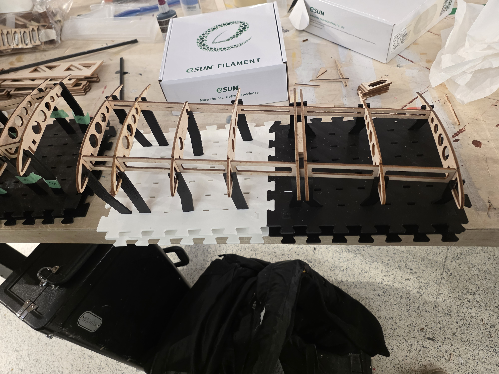
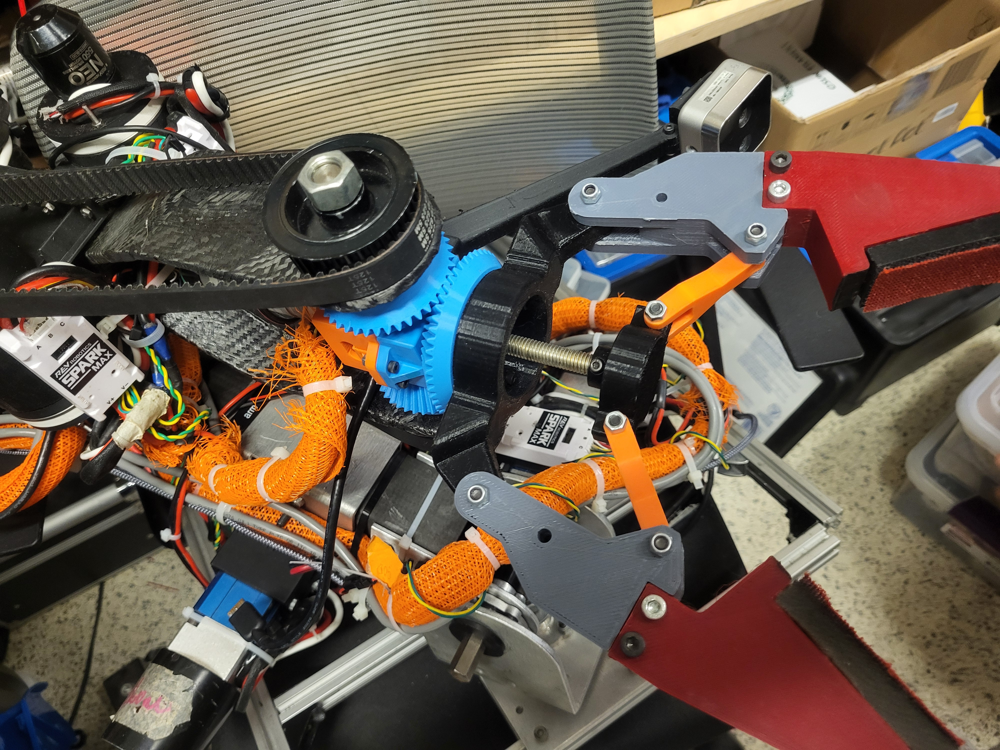

02 · Teams
Collaborative engineering, from analysis to fabrication.
Technical contributions made within multidisciplinary student teams, with emphasis on aerodynamics, design integration, CAD, and manufacturing.

Competition Aircraft Design & R&D
A portfolio of aerodynamics and aircraft-development work including prop-wash studies, aerodynamic-tool comparison, multidisciplinary optimization, fuselage modelling, wing construction, and fully 3D-printed wing experiments.

Rover Arm Mechanical Design
Mechanical design and CAD contributions for a student rover arm, including component integration, packaging, manufacturability, and iterative refinement.